Lab 3 : Multiplexed 7-Segment Display
Introduction
In this lab I built off of Lab 2 to implement a time-multiplexing keypad scanner to drive two seven-segment displays using the same seven-segment decoder HDL module and set of FPGA GPIO pins. When a key was pressed, the design would indicate that it was pressed and record that number on the right of the dual seven seg display. Once another button was pressed, the previous digit would shift to the left hand place and the new digit would fill the right.
Design and Testing Methodology
In this lab I used an on-board high-speed oscillator (HSOSC) from the iCE40 UltraPlus primitive library was used to generate a clock signal at 24 MHz, this was the slow clock that all modules were implemented on. Additionally a synchronizer was added to delay the inputs by two clock cycles but the implementation of that was questionably buggy…
LED Design
There were 4 LEDs (3 SMT, one GPIO pin) that I used to debug. I would sometimes have them indicate the row that was being pressed or the columns it was cycling on.
Current Calculations
Current calculations for PNP Transistors, and Dual Seven Segment Display remained the same from Lab 2. See the calculations below in Figure 1. An additional 680 Ohm resistor was added as pull downs for the rows.
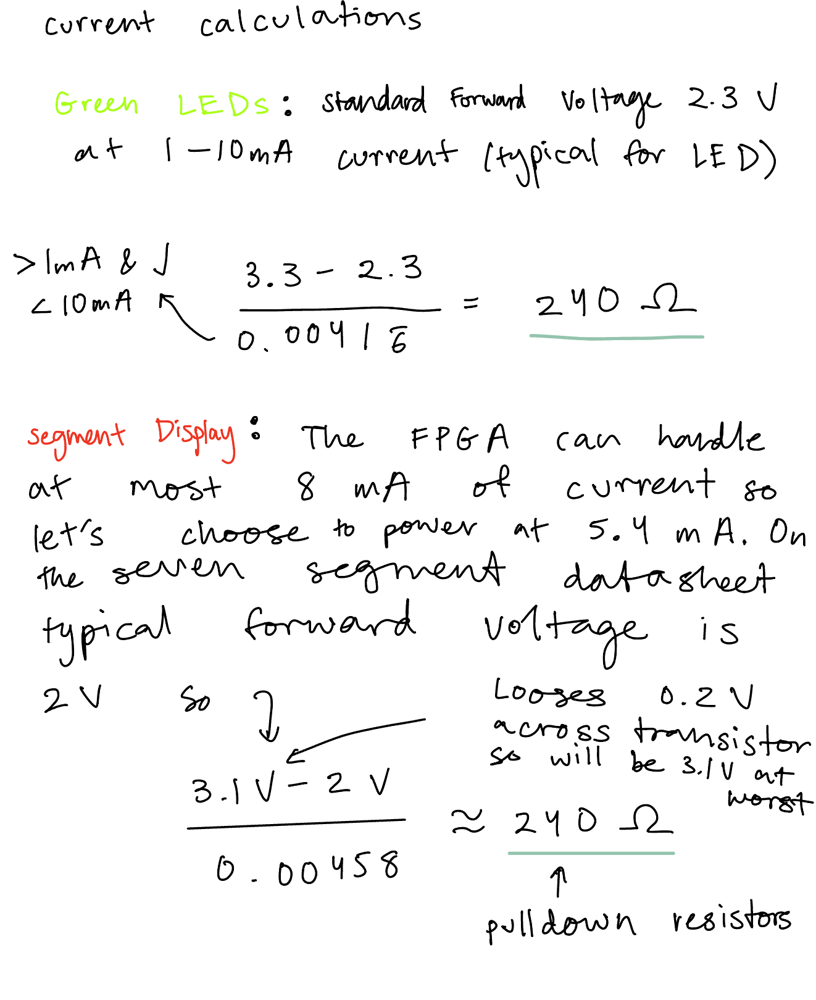
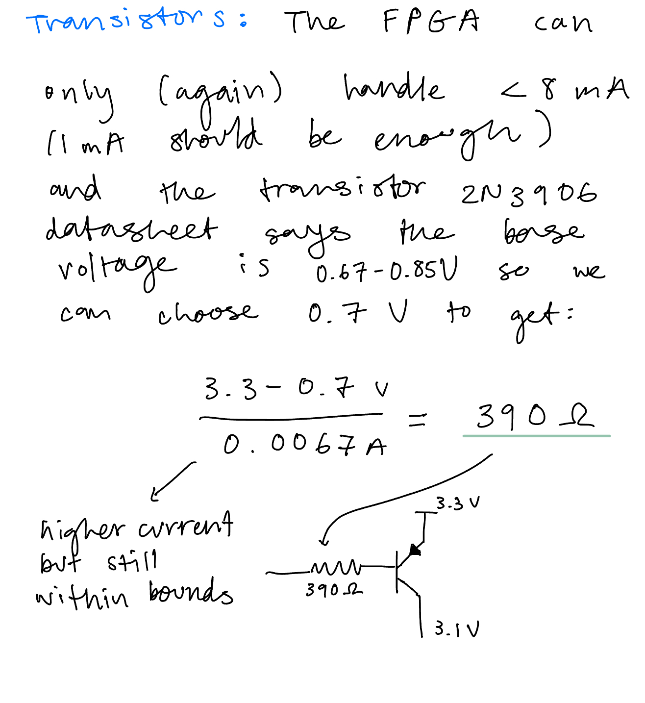
Technical Documentation
All the code for the project can be found in the following Github repository.
Block Diagram
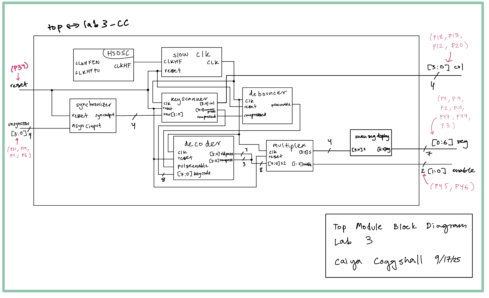
The block diagram in Figure 2 demonstrates the overall architecture of my design. I had eight main modules, two fsms (one for column scanning and one for debouncing), one for decoding (i.e translating a column row encoding to a binary bits representing a number on the keypad & updating the new press), one to synchronize the code, one as a slow clk to slow down the high speed oscillator, one for my multiplexer code (i.e choosing which input and power to turn on), one for my seven segment code (i.e telling which segments to light up based on input), and the top module containing everything as well as the high speed oscillator.
Schematic
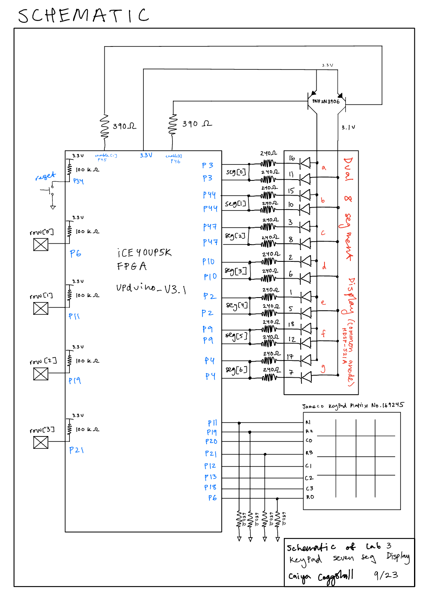
The schematic as seen in Figure 3 shows the layout of the circuit design. It has 4 GPIO pins routing to the FPGA as the input rows with pulldowns of 680 Ohms and an internal 100 kΩ pullup resistor to make sure the active low reset pin doesn’t float. The output LED and PNP transistors were connected to a current limiting resistor to make sure the output current didn’t exceed the max output current of the FPGA I/O pins. With the connection from the FPGA to the Dual Seven Segment Display, I could have wired the board with only 7 resistors and it would have worked just as well but this method was slightly more intuitive and so what I choose to go with. Refer to Figure 1 for resistor calculations. Compared to lab 2 I additionally had a keypad where I looped through the columns and had inputs of the rows.
State Transition Diagrams (FSMs)
I created a few modules based off of FSMs as seen below.
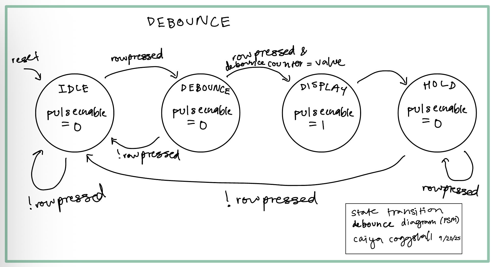
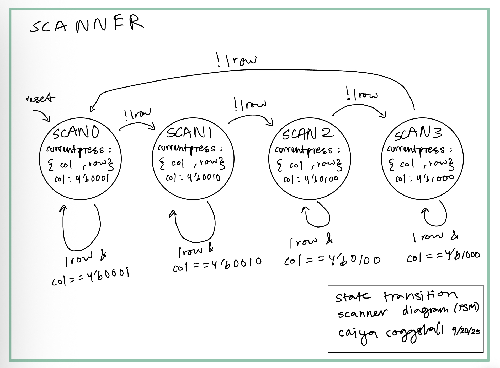
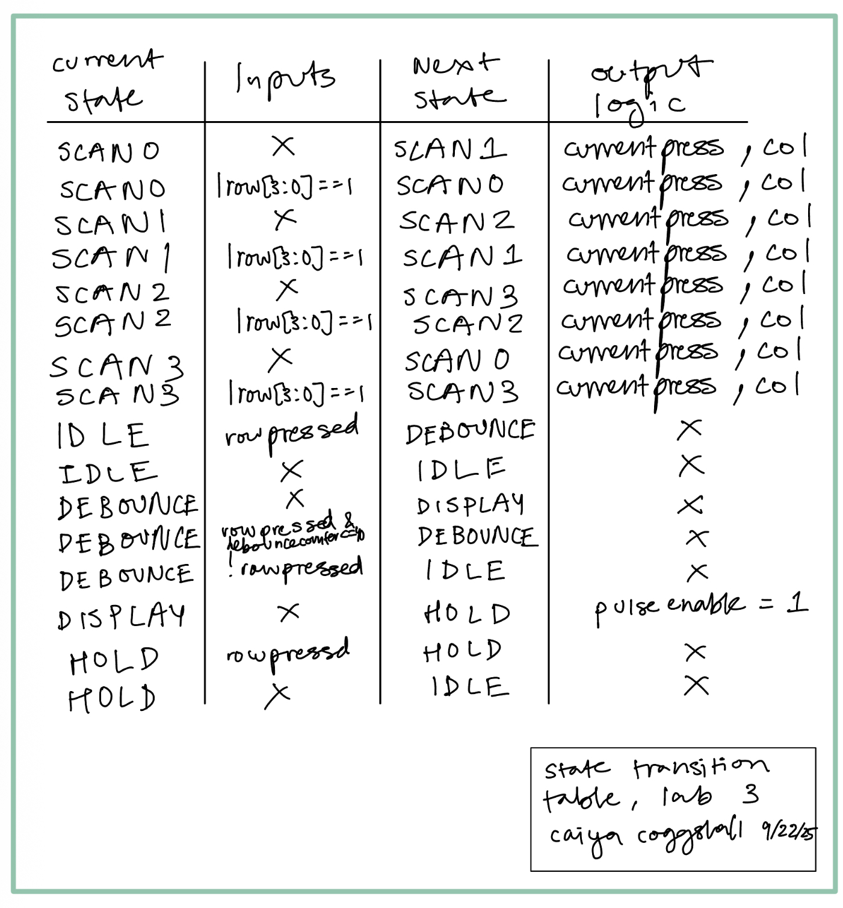
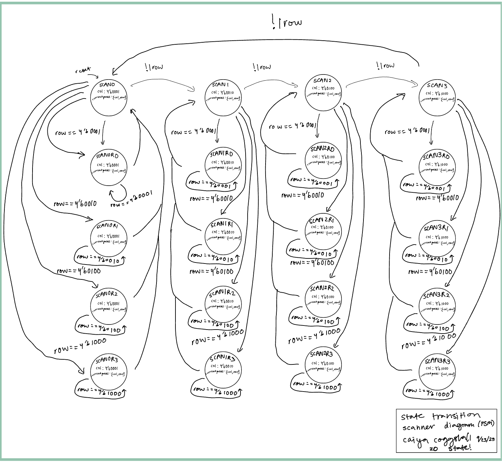
Results and Discussion
I was able to write some testbenches depicting the modules working as intended. Learned how to use tranif!
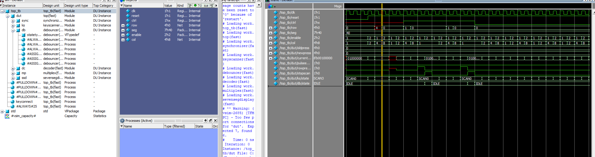
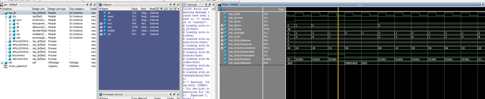
These can be seen entering the debounce and IDLE states as well as pulseenable going off as expected. This validates my debouncing logic.

Figure 9 shows the seven_seg_display HDL module works against the test vectors I wrote.
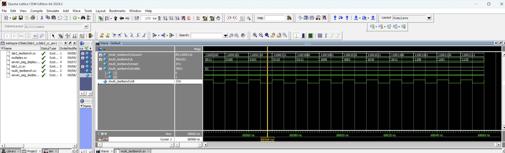
Figure 10 shows the multiplex HDL module working where s receives either the front 4 bits or back 4 bits of s2count on the next clock cycle. This makes sense because in the test bench I’m setting the 8 bit input and instantiating my multiplex HDL module code on that clock cycle. So on the next clock cycle I get an s output from my multiplex code while my s2count increments to a new number. This is explains the 1 cycle mismatch on the waveforms.
Also, this image shows that it get’s the correct 4 bits of s2count because in this image enable[0] is ON and enable[1] is OFF which means that s2count is receiving bit’s [3:0] which is what we see on the waveform.
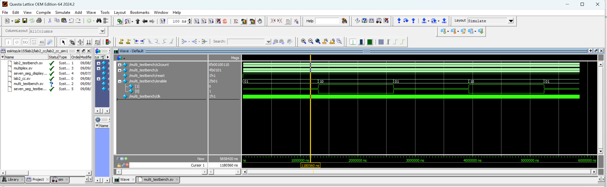
Figure 11 shows Figure 10 again but run for a longer time period to show the enable toggling.
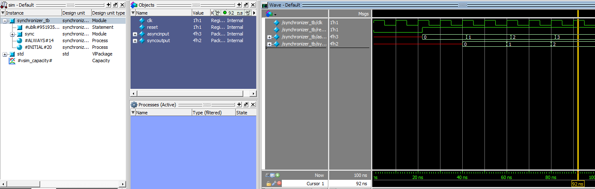
We can see the synchronizer offset by two clock cycles as expected!
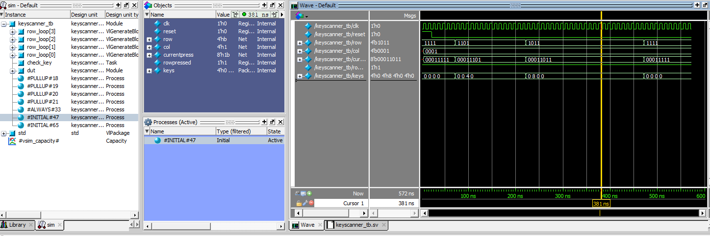
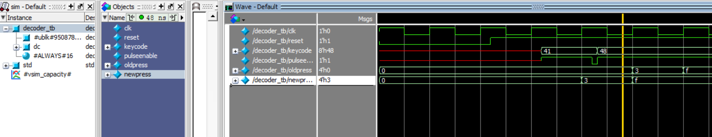
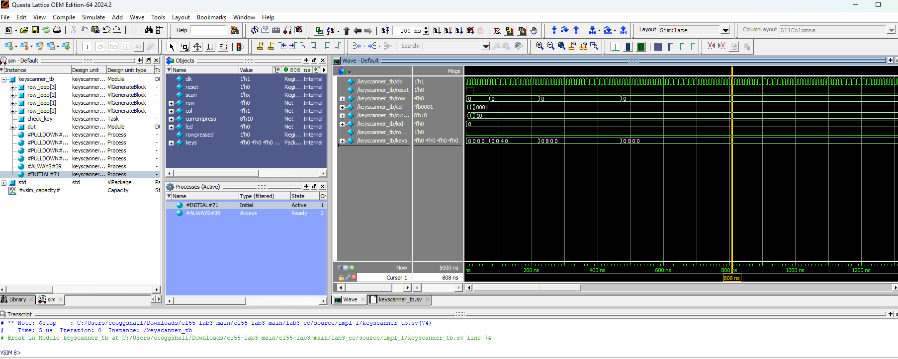
These are all my testbenches as seen in the figures above.
Revision Changes
Before my revisions to the code, I had gotten everything working except I hadn’t incorporated a synchronizer for metastability into my design and when you held down on a button it would still register other button presses.
There were a number of fixes I had to make for these problems. To start with I tried to fix them without the synchronizer.
I mostly made changes to my keyscanner.sv and debouncer.sv files. One thing I needed was neq logic in my HOLD state because something was allowing me to release my button press and register new ones when I still had something held down. This is because the holdstate was only checking if rowpressed = 1. rowpressed was all the rows or’d together so 4 input which I’m still unsure how it was able to bypass but one thing I needed to change was in certain areas making that OR an XOR so that it was only true when 1 of the inputs was on. After changing some of my logic, I was able to get my code to not register other presses unless you were in same column. Part of this was that I didn’t have logic that was checking that. Rows are inputs so I was powering each column and so if a column was on, I didn’t have any logic to prevent it from taking in other presses. This was a relatively simple fix by adding in an else if statement for other presses in the SCAN state (the path to figuring this out was not easy). Except, adding in this logic meant that if you held down on a button in a column and pressed down on a second button (in the same column) and released the first button again it wouldn’t register that second button which was a spec!) because it had logic rejecting that. This is when I started messing with my debouncer logic. I added in a CHECK state as well as storing the exact row index and value of the row/column immediately upon detection of the press. The always_ff would then continue to store those same values until it detected that key to be lifted. Then in the HOLD state, it wouldn’t go back to the IDLE scanning state unless the current key that was being pressed was the same as the one it stored at the first press of the FSM. The new debouncer FSM can be found below:
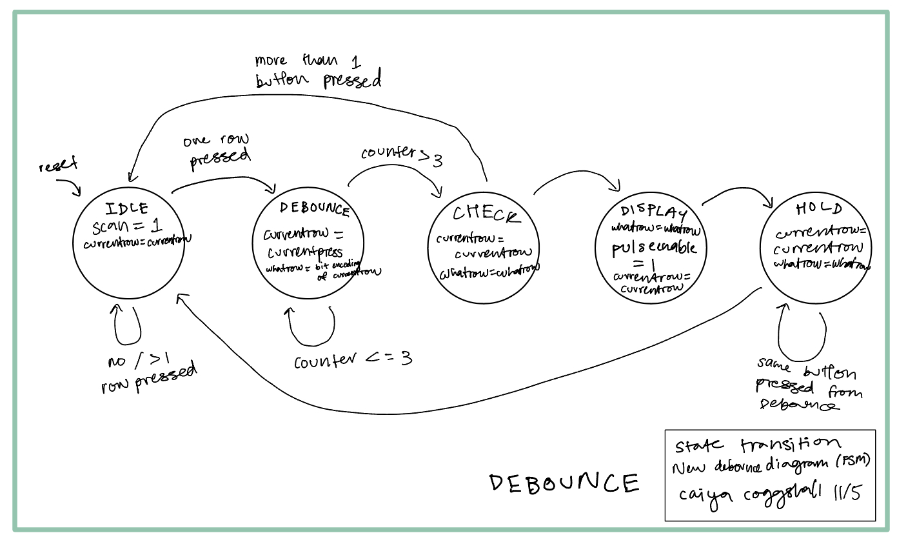
Adding in the synchronizer added in a host of issues. The first few times I booted it up I only got 0’s locked on the display. I basically ended up having my SCAN states (SCAN0, SCAN1, SCAN2, SCAN3) displace by two so that SCAN0 would go to logic for SCAN2, and SCAN1 to SCAN3. I drew a new block diagram below:
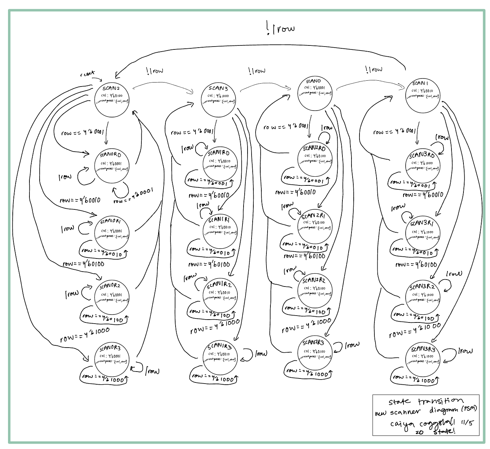
Every now and then there would be an error where if you pressed down on one key and then pressed down on two additional keys in the same row, it would register that first press value again on the display. So there were occasional bugs as it wasn’t perfect. But Prof Spencer was very kind in my checkoff and allowed me to get excellence!
Conclusion
Total Hours Spent on Lab: 67 hours + 25 hours so = 92 hours
This lab was incredibly frustrating at times and seemingly impossible at others. It was tough. That being said, a rickety profiency is the goal.
Revision: I was able to complete and get all the mechanisms necessary for excellence working! I feel like I actually understand my code more than ever. A lot of the time that I accrued for my first attempt at this lab wasn’t the most productive because I think I felt scared to change too much when it was so close to working. In my revision, my code looks nothing like it did when I’m started and I think that helped understand why I needed some piece of logic/code or if I even needed it at all!
AI Prototype Summary
I used ChatGPT 5 Thinking as my LLM for this assignment. I then entered in the following prompt:
"Target device: Lattice iCE40 UP5K FPGA. Overall Goal: Write SystemVerilog to scan a 4x4 matrix keypad and display the last two hex keys pressed on a dual 7 segment display. Current Goal: Write a synthesizable SystemVerilog module that produces a one‑shot registration signal for the keypad system. Behavior: When a key press is first detected, capture the current key code and assert a single‑cycle “new key” pulse. While any key remains pressed, do not accept additional keys. Only after keys are released should a subsequent press be recognized. This should handle debouncing of the keys. Implement as a small synchronous FSM with enumerated states and glitch‑free outputs. Keep names and interfaces reasonable; do not assume any hidden modules beyond what you define here."This produced a lot of code first try ang had an error with enum variabke assigning to something outside of it’s statetype. It changed it’s logic from cols_n <= col_mask((col_q == COL3) ? COL0 : col_q + 2’d1); to cols_n <= col_mask((col_q == COL3) ? COL0 : col_t’(col_q + 2’d1));
This accounts for the col_t enum type. The final code (that synthesized) looked like the follwing:
// ================================================================
// iCE40 UP5K 4x4 Keypad → dual 7-segment display (last two keys)
// Clock ~20 MHz (e.g., SB_HFOSC). All logic synchronous to clk.
// ---------------------------------------------------------------
// I/O conventions
// keypad rows: active-low inputs (pulled up externally or via FPGA IO)
// keypad cols: active-low outputs (one driven low at a time)
// 7-seg: segment polarity and digit-enable polarity are parameterized
// ================================================================
/*----------------------------*
* 1) Clock tick generator *
*----------------------------*/
module clock_div_ticks #(
// Nominal UP5K HFOSC ~ 24 MHz; set to your actual clk rate.
parameter int unsigned CLK_HZ = 20_000_000,
// Slow keypad scan rate (per column) ~100–200 Hz; default ~160 Hz.
parameter int unsigned SCAN_HZ = 160,
// Display multiplex toggle ~2 kHz (→ each digit ~1 kHz) to avoid flicker.
parameter int unsigned REFRESH_HZ = 2000
)(
input logic clk,
input logic rst_n,
output logic tick_scan, // 1 clk-cycle pulse @ SCAN_HZ
output logic tick_refresh // 1 clk-cycle pulse @ REFRESH_HZ
);
localparam int unsigned SCAN_DIV = (SCAN_HZ == 0) ? 1 : (CLK_HZ / SCAN_HZ);
localparam int unsigned REFRESH_DIV = (REFRESH_HZ == 0) ? 1 : (CLK_HZ / REFRESH_HZ);
logic [$clog2(SCAN_DIV) -1:0] scan_cnt;
logic [$clog2(REFRESH_DIV)-1:0] ref_cnt;
always_ff @(posedge clk) begin
if (!rst_n) begin
scan_cnt <= '0; tick_scan <= 1'b0;
ref_cnt <= '0; tick_refresh <= 1'b0;
end else begin
// scan tick
if (scan_cnt == SCAN_DIV-1) begin
scan_cnt <= '0;
tick_scan <= 1'b1;
end else begin
scan_cnt <= scan_cnt + 1'b1;
tick_scan <= 1'b0;
end
// refresh tick
if (ref_cnt == REFRESH_DIV-1) begin
ref_cnt <= '0;
tick_refresh <= 1'b1;
end else begin
ref_cnt <= ref_cnt + 1'b1;
tick_refresh <= 1'b0;
end
end
end
endmodule
/*---------------------------------------------*
* 2) 4x4 keypad scanner (active-low matrix) *
* - Scans one column low at a time *
* - Registers at most one key per press *
* - Ignores new presses while any held *
* - Allows new registration only on release*
* - Debounce-by-design via slow scan rate *
*---------------------------------------------*/
module keypad_scanner #(
// Key mapping is parametric; default is row-major 0..F:
// row0: 0 1 2 3, row1: 4 5 6 7, row2: 8 9 A B, row3: C D E F
parameter logic [3:0] KEY_LUT [0:3][0:3] = '{
'{4'h0, 4'h1, 4'h2, 4'h3},
'{4'h4, 4'h5, 4'h6, 4'h7},
'{4'h8, 4'h9, 4'hA, 4'hB},
'{4'hC, 4'hD, 4'hE, 4'hF}
}
)(
input logic clk,
input logic rst_n,
input logic tick_scan, // one pulse per column dwell
input logic [3:0] rows_n, // active-low row inputs
output logic [3:0] cols_n, // active-low column drive (one low)
output logic key_valid, // 1 clk-cycle pulse when new key registered
output logic [3:0] key_code // hex nibble (0..F) for the registered key
);
// Synchronize row inputs to clk to avoid metastability.
logic [3:0] rows_ff0, rows_ff1;
always_ff @(posedge clk) begin
if (!rst_n) begin
rows_ff0 <= 4'hF;
rows_ff1 <= 4'hF;
end else begin
rows_ff0 <= rows_n;
rows_ff1 <= rows_ff0;
end
end
// Column sequencer (active-low one-hot across 4 columns)
typedef enum logic [1:0] {COL0=2'd0, COL1=2'd1, COL2=2'd2, COL3=2'd3} col_t;
col_t col_q;
// Simple 2-state FSM: IDLE (no key registered yet), WAIT_REL (ignore until all keys released)
typedef enum logic {IDLE, WAIT_REL} state_t;
state_t state_q;
// Count consecutive scan ticks with no key observed across the *currently active* column.
// Requiring 4 consecutive column positions high ≈ full matrix release.
logic [2:0] no_key_ticks_q; // 0..4 sufficient
// Priority-encode first asserted (active-low) row to a row index 0..3.
function automatic logic [1:0] row_index(input logic [3:0] rn);
if (!rn[0]) return 2'd0;
if (!rn[1]) return 2'd1;
if (!rn[2]) return 2'd2;
return 2'd3; // if none low, value unused
endfunction
// Column drives (one low; others high). We update after sampling rows for the current column.
function automatic logic [3:0] col_mask(input col_t c);
case (c)
COL0: return 4'b1110;
COL1: return 4'b1101;
COL2: return 4'b1011;
default: return 4'b0111; // COL3
endcase
endfunction
// Sequential logic
always_ff @(posedge clk) begin
if (!rst_n) begin
col_q <= COL0;
cols_n <= col_mask(COL0);
state_q <= IDLE;
no_key_ticks_q <= 3'd0;
key_valid <= 1'b0;
key_code <= 4'h0;
end else begin
key_valid <= 1'b0; // default
if (tick_scan) begin
// Sample rows while current column has been stable for the entire dwell.
logic [3:0] rn = rows_ff1; // active-low rows
logic any_in_col = (rn != 4'hF);
unique case (state_q)
IDLE: begin
if (any_in_col) begin
// Register exactly one key: (row, current column)
key_code <= KEY_LUT[row_index(rn)][col_q];
key_valid <= 1'b1;
state_q <= WAIT_REL;
no_key_ticks_q <= 3'd0;
end
end
WAIT_REL: begin
// Ignore new presses; wait until matrix fully released.
// Require 4 consecutive column-dwells with no key (i.e., one whole scan cycle).
if (any_in_col) begin
no_key_ticks_q <= 3'd0; // still held; keep waiting
end else begin
if (no_key_ticks_q == 3'd3) begin
state_q <= IDLE; // fully released across all columns
no_key_ticks_q <= 3'd0;
end else begin
no_key_ticks_q <= no_key_ticks_q + 3'd1;
end
end
end
endcase
// Advance to next column *after* using the current one’s sample
case (col_q)
COL0: col_q <= COL1;
COL1: col_q <= COL2;
COL2: col_q <= COL3;
default: col_q <= COL0;
endcase
cols_n <= col_mask((col_q == COL3) ? COL0 : col_t'(col_q + 2'd1));
end
end
end
endmodule
/*-------------------------------------------*
* 3) Two-digit 7-segment time-multiplexer *
* - Balanced 50/50 duty *
* - Parametric polarity *
*-------------------------------------------*/
module sevenseg2_mux #(
parameter bit SEG_ACTIVE_LOW = 1'b1, // 1 → segments active-low
parameter bit DIG_ACTIVE_LOW = 1'b1 // 1 → digit enables active-low
)(
input logic clk,
input logic rst_n,
input logic tick_refresh, // toggles active digit
input logic [3:0] digit_hi, // left/older
input logic [3:0] digit_lo, // right/most-recent
output logic [6:0] seg, // a..g
output logic dp, // decimal point (off)
output logic [1:0] dig_en // {left,right}
);
// Toggle which digit is active at each refresh tick (gives balanced brightness).
logic sel_q; // 0 → right digit active; 1 → left digit active
always_ff @(posedge clk) begin
if (!rst_n) sel_q <= 1'b0;
else if (tick_refresh) sel_q <= ~sel_q;
end
// Hex→segments (abcdefg), active-high internally; invert at output if needed.
function automatic logic [6:0] hex_to_segments(input logic [3:0] x);
unique case (x)
4'h0: hex_to_segments = 7'b1111110;
4'h1: hex_to_segments = 7'b0110000;
4'h2: hex_to_segments = 7'b1101101;
4'h3: hex_to_segments = 7'b1111001;
4'h4: hex_to_segments = 7'b0110011;
4'h5: hex_to_segments = 7'b1011011;
4'h6: hex_to_segments = 7'b1011111;
4'h7: hex_to_segments = 7'b1110000;
4'h8: hex_to_segments = 7'b1111111;
4'h9: hex_to_segments = 7'b1111011;
4'hA: hex_to_segments = 7'b1110111;
4'hB: hex_to_segments = 7'b0011111; // 'b'
4'hC: hex_to_segments = 7'b1001110;
4'hD: hex_to_segments = 7'b0111101;
4'hE: hex_to_segments = 7'b1001111;
4'hF: hex_to_segments = 7'b1000111;
default: hex_to_segments = 7'b0000001; // '-'
endcase
endfunction
logic [6:0] seg_raw;
logic [1:0] en_raw;
always_comb begin
// Choose which digit value to show on this timeslot
seg_raw = hex_to_segments(sel_q ? digit_hi : digit_lo);
// Drive segments with requested polarity
seg = SEG_ACTIVE_LOW ? ~seg_raw : seg_raw;
// DP off
dp = SEG_ACTIVE_LOW ? 1'b1 : 1'b0;
// One-hot digit enable: {left,right}
en_raw = sel_q ? 2'b10 : 2'b01;
dig_en = DIG_ACTIVE_LOW ? ~en_raw : en_raw;
end
endmodule
/*--------------------------------------*
* 4) Top-level: glue it all together *
*--------------------------------------*/
module up5k_keypad_7seg_top #(
parameter int unsigned CLK_HZ = 20_000_000,
parameter int unsigned SCAN_HZ = 160,
parameter int unsigned REFRESH_HZ = 2000,
parameter bit SEG_ACTIVE_LOW = 1'b1, // set to match your display
parameter bit DIG_ACTIVE_LOW = 1'b1 // set to match your display
)(
input logic clk, // drive from SB_HFOSC or external clock
input logic rst_n, // synchronous reset (active-low)
input logic [3:0] row_n, // keypad rows (active-low inputs)
output logic [3:0] col_n, // keypad cols (active-low outputs)
output logic [6:0] seg, // 7-seg segments a..g
output logic dp, // decimal point
output logic [1:0] dig_en // digit enables {left, right}
);
// Clock tick generator
logic tick_scan, tick_refresh;
clock_div_ticks #(
.CLK_HZ (CLK_HZ),
.SCAN_HZ (SCAN_HZ),
.REFRESH_HZ (REFRESH_HZ)
) u_ticks (
.clk (clk),
.rst_n (rst_n),
.tick_scan (tick_scan),
.tick_refresh(tick_refresh)
);
// Keypad scanner
logic key_valid;
logic [3:0] key_code;
keypad_scanner u_scan (
.clk (clk),
.rst_n (rst_n),
.tick_scan (tick_scan),
.rows_n (row_n),
.cols_n (col_n),
.key_valid (key_valid),
.key_code (key_code)
);
// Last-two-key history: left=older, right=most-recent
logic [3:0] last_lo_q, last_hi_q;
always_ff @(posedge clk) begin
if (!rst_n) begin
last_lo_q <= 4'h0; // most recent
last_hi_q <= 4'h0; // older
end else if (key_valid) begin
last_hi_q <= last_lo_q; // shift older
last_lo_q <= key_code; // capture new
end
end
// 7-segment display mux (balanced brightness, no flicker)
sevenseg2_mux #(
.SEG_ACTIVE_LOW (SEG_ACTIVE_LOW),
.DIG_ACTIVE_LOW (DIG_ACTIVE_LOW)
) u_disp (
.clk (clk),
.rst_n (rst_n),
.tick_refresh(tick_refresh),
.digit_hi (last_hi_q), // left
.digit_lo (last_lo_q), // right
.seg (seg),
.dp (dp),
.dig_en (dig_en)
);
endmodule
// ----------------------- Optional note --------------------------
// If you want to use the UP5K's internal HFOSC directly, instantiate
// SB_HFOSC in your board-level wrapper and feed its output into
// up5k_keypad_7seg_top.clk. Example (check your toolchain docs):
//
// SB_HFOSC #(.CLKHF_DIV("0b01")) u_hfosc ( .CLKHFEN(1'b1), .CLKHFPU(1'b1), .CLKHF(clk) );
// ----------------------------------------------------------------
My next prompts were the following for the modular prompts (fsms) as opposed to the monolithic prompts. I entered a series of threee prompts.
Prompt 1:
“Target device: Lattice iCE40 UP5K FPGA. Overall Goal: Write SystemVerilog to scan a 4x4 matrix keypad and display the last two hex keys pressed on a dual 7 segment display. Current Goal: Write a synthesizable SystemVerilog module that produces a one‑shot registration signal for the keypad system. Behavior: When a key press is first detected, capture the current key code and assert a single‑cycle “new key” pulse. While any key remains pressed, do not accept additional keys. Only after keys are released should a subsequent press be recognized. This should handle debouncing of the keys. Implement as a small synchronous FSM with enumerated states and glitch‑free outputs. Keep names and interfaces reasonable; do not assume any hidden modules beyond what you define here.”
Prompt 2:
“Target device: Lattice iCE40 UP5K FPGA. Write a synthesizable SystemVerilog module that cycles through keypad columns (active‑low, one at a time) and samples rows (active‑low) to detect a single key at a time. Behavior: Iterate columns at a suitable scan rate derived from the divided clock and sample rows When a key is detected, report a stable key code consistent with a standard 4x4 keypad layout and maintain it while the key remains pressed. Provide a boolean signal indicating whether any key is currently pressed. Use clean state encoding and synchronous logic; avoid combinational feedback and latches.”
Prompt 3:
“Target device: Lattice iCE40 UP5K FPGA with internal oscillator as the root clock source. Write a top‑level SystemVerilog module that instantiates the scanner and one‑shot modules, shifts the last two keys (older ← most recent; most recent ← new), and drives a multiplexed two‑digit seven‑segment display. Requirements: Update the displayed digits only when a new key is registered Ensure equal apparent brightness and no visible flicker.Keep all logic synthesizable and synchronous; use idiomatic SystemVerilog constructs.Provide any small clock‑enable or divider logic you need. You can also assume that a sevenSegment module exists that takes a 4 bit input and outputs the 7 segments.”
It produced a few modules that synthesized!
// Keypad one-shot registration filter
// - Latches a key code once per press and emits a single-cycle pulse.
// - Ignores chattering/bounce by requiring stable press/release for a
// programmable number of sampling strobes.
// - While any key is held, additional keys are ignored until release.
//
// Hook 'sample_en' to your scanner's "full scan done" strobe (recommended).
// If you don't have such a strobe, tie sample_en=1 and tune the debounce
// counts in raw clock cycles instead.
module keypad_one_shot #(
parameter int unsigned DEBOUNCE_PRESS_TICKS = 3, // stable samples to accept a press
parameter int unsigned DEBOUNCE_RELEASE_TICKS = 3 // stable samples to accept a release
) (
input logic clk,
input logic rst_n, // synchronous, active-low
// Advance the FSM and counters only when this strobe is 1 for one clk.
input logic sample_en,
// Scanner inputs (synchronous to clk)
input logic any_key, // 1 when any key is currently detected
input logic [3:0] key_code_in, // hex code of detected key when any_key=1
// Outputs
output logic new_key_pulse, // 1 clk pulse when a NEW key is registered
output logic [3:0] key_code_out // latched code of the most recent registered key
);
// FSM
typedef enum logic [1:0] { IDLE, PRESS_DB, HELD, RELEASE_DB } state_e;
state_e state;
// Counter width big enough for either debounce parameter
localparam int unsigned MAX_DB = (DEBOUNCE_PRESS_TICKS > DEBOUNCE_RELEASE_TICKS)
? DEBOUNCE_PRESS_TICKS : DEBOUNCE_RELEASE_TICKS;
localparam int unsigned CNT_W = (MAX_DB <= 1) ? 1 : $clog2(MAX_DB);
logic [CNT_W-1:0] cnt; // shared counter for press/release debouncing
logic [3:0] candidate_code; // key code we're currently validating
// One-shot, glitch-free registered outputs
always_ff @(posedge clk) begin
if (!rst_n) begin
state <= IDLE;
cnt <= '0;
candidate_code<= 4'h0;
key_code_out <= 4'h0;
new_key_pulse <= 1'b0;
end else begin
// Default: pulse deasserted unless we explicitly set it this cycle
new_key_pulse <= 1'b0;
// Advance only on sampling strobe to make debounce counts meaningful
if (sample_en) begin
unique case (state)
IDLE: begin
cnt <= '0;
if (any_key) begin
// Start validating this candidate key code
candidate_code <= key_code_in;
state <= PRESS_DB;
// cnt starts at 0; next stable sample will bump to 1
end
end
PRESS_DB: begin
if (!any_key) begin
// Bounce ended before stabilizing -> back to idle
state <= IDLE;
cnt <= '0;
end else if (key_code_in == candidate_code) begin
// Still seeing the same key; increment and check threshold
if (cnt == (DEBOUNCE_PRESS_TICKS - 1)) begin
// Press is now stable: register and emit one-shot
key_code_out <= candidate_code;
new_key_pulse <= 1'b1;
state <= HELD;
cnt <= '0;
end else begin
cnt <= cnt + 1'b1;
end
end else begin
// Different key showed up while pressed -> restart debounce on new code
candidate_code <= key_code_in;
cnt <= '0;
end
end
HELD: begin
// Ignore any code changes while held; wait for clean release
if (!any_key) begin
state <= RELEASE_DB;
cnt <= '0;
end
end
RELEASE_DB: begin
if (!any_key) begin
if (cnt == (DEBOUNCE_RELEASE_TICKS - 1)) begin
// Release has stabilized; ready for the next press
state <= IDLE;
cnt <= '0;
end else begin
cnt <= cnt + 1'b1;
end
end else begin
// Press returned before release stabilized -> still held
state <= HELD;
cnt <= '0;
end
end
default: begin
state <= IDLE;
cnt <= '0;
end
endcase
end // if sample_en
end
end
// Synthesis-friendly guards for corner cases where a debounce parameter is 0.
// (If set to 0, we accept immediately on the first qualifying sample.)
// These generate away when parameters are >=1.
initial begin
// Tool-friendly, no runtime effect; safe to omit if your flow dislikes 'initial'
// assert(DEBOUNCE_PRESS_TICKS >= 1);
// assert(DEBOUNCE_RELEASE_TICKS >= 1);
end
endmodule```// 4x4 matrix keypad scanner for iCE40 UP5K (or similar) // - Columns are actively driven, one at a time, active-low (col_n). // - Rows are sensed, active-low (row_n). // - Reports a hex code (0..F with ’‘->E,’#’->F) for a single key at a time, // and keeps it stable while that key is held. // - any_key is 1 when any key(s) are pressed (even if a multi-press is ambiguous). // - Produces a 1-cycle frame_tick at the end of each full scan (4 columns), // which you can feed to a debouncer / one-shot if desired. // // Assumptions: // - Rows have pull-ups (internal or external). Keys short Row<->Col when pressed. // - Row/Col indexing: row_n[0] is top row, col_n[0] is leftmost column. // // Timing: // - The module steps columns at CLK_HZ / (FRAME_HZ4). // Default: 20 MHz clk, 500 frames/s -> 2 ms per full scan.
module keypad_scanner_4x4 #( parameter int unsigned CLK_HZ = 20_000_000, parameter int unsigned FRAME_HZ = 500 // full 4-column scans per second ) ( input logic clk, input logic rst_n, // synchronous, active-low
// Matrix I/O output logic [3:0] col_n, // active-low column drives (one low at a time) input logic [3:0] row_n, // active-low row senses
// Status / data output logic any_key, // 1 if any key is currently pressed output logic [3:0] key_code, // stable hex code (locks to one key while held) output logic frame_tick // 1-cycle pulse at end of each full scan );
// ———- Derived timing ———- localparam int unsigned COL_TICKS_RAW = (FRAME_HZ == 0) ? 1 : (CLK_HZ / (FRAME_HZ * 4)); localparam int unsigned COL_TICKS = (COL_TICKS_RAW == 0) ? 1 : COL_TICKS_RAW; localparam int unsigned CNT_W = (COL_TICKS <= 1) ? 1 : $clog2(COL_TICKS);
// ———- Column stepping ———- logic [CNT_W-1:0] tick_cnt; logic [1:0] col_idx; // 0..3 logic [1:0] col_idx_next;
// ———- Row input synchronization (to clk) ———- logic [3:0] row_sync0, row_sync1; logic [3:0] rows_ah; // active-high: 1 means “row pressed”
// ———- Per-frame aggregation (what we saw across 4 columns) ———- logic agg_any; // saw any press this frame logic agg_multi; // detected >1 keys in this frame (or multi rows at once) logic [1:0] agg_row, agg_col; // candidate single key (first unique seen)
// ———- Held/locked key ———- typedef enum logic [0:0] { IDLE=1’b0, HELD=1’b1 } state_e; state_e state; logic [1:0] held_row, held_col;
// ———- Helpers ———- function automatic logic [1:0] onehot_to_idx (input logic [3:0] oh); unique case (oh) 4’b0001: onehot_to_idx = 2’d0; 4’b0010: onehot_to_idx = 2’d1; 4’b0100: onehot_to_idx = 2’d2; default: onehot_to_idx = 2’d3; // 4’b1000 endcase endfunction
// Map (row, col) to hex code. Layout: // Row0: 1 2 3 A // Row1: 4 5 6 B // Row2: 7 8 9 C // Row3: E 0 F D (* -> E, # -> F) function automatic logic [3:0] map_hex (input logic [1:0] r, input logic [1:0] c); unique case ({r,c}) 4’b00_00: map_hex = 4’h1; // R0C0 4’b00_01: map_hex = 4’h2; // R0C1 4’b00_10: map_hex = 4’h3; // R0C2 4’b00_11: map_hex = 4’hA; // R0C3
4'b01_00: map_hex = 4'h4; // R1C0
4'b01_01: map_hex = 4'h5; // R1C1
4'b01_10: map_hex = 4'h6; // R1C2
4'b01_11: map_hex = 4'hB; // R1C3
4'b10_00: map_hex = 4'h7; // R2C0
4'b10_01: map_hex = 4'h8; // R2C1
4'b10_10: map_hex = 4'h9; // R2C2
4'b10_11: map_hex = 4'hC; // R2C3
4'b11_00: map_hex = 4'hE; // R3C0 = '*'
4'b11_01: map_hex = 4'h0; // R3C1 = '0'
4'b11_10: map_hex = 4'hF; // R3C2 = '#'
4'b11_11: map_hex = 4'hD; // R3C3 = 'D'
default : map_hex = 4'h0;
endcaseendfunction
// ———- Main sequential logic ———- always_ff @(posedge clk) begin if (!rst_n) begin tick_cnt <= ’0; col_idx <= 2’d0; col_n <= 4’b1110; // drive column 0 active-low initially frame_tick <= 1’b0;
row_sync0 <= 4'hF;
row_sync1 <= 4'hF;
agg_any <= 1'b0;
agg_multi <= 1'b0;
agg_row <= 2'd0;
agg_col <= 2'd0;
state <= IDLE;
held_row <= 2'd0;
held_col <= 2'd0;
any_key <= 1'b0;
key_code <= 4'h0;
end else begin
// Sync inputs
row_sync0 <= row_n;
row_sync1 <= row_sync0;
rows_ah <= ~row_sync1; // active-high "pressed" bits
frame_tick <= 1'b0; // default
// Column tick
logic end_of_col = (tick_cnt == COL_TICKS-1);
logic end_of_frame = end_of_col && (col_idx == 2'd3);
// At the sampling instant (end of column), update per-frame aggregation
if (end_of_col) begin
// Determine how many rows are active in this column
logic [3:0] this_col_rows = rows_ah;
logic row_any = |this_col_rows;
logic row_multi = (this_col_rows & (this_col_rows - 4'b0001)) != 4'b0000;
if (row_any) begin
if (!agg_any) begin
// First detection this frame
agg_any <= 1'b1;
if (!row_multi) begin
agg_row <= onehot_to_idx(this_col_rows);
agg_col <= col_idx;
end else begin
agg_multi <= 1'b1;
end
end else begin
// We had something already -> mark as multi
agg_multi <= 1'b1;
end
end
// End-of-frame decision point
if (end_of_frame) begin
frame_tick <= 1'b1;
// any_key reflects whether we saw any press anywhere during the frame
any_key <= agg_any;
unique case (state)
IDLE: begin
if (agg_any && !agg_multi) begin
// Lock onto this unique key
held_row <= agg_row;
held_col <= agg_col;
key_code <= map_hex(agg_row, agg_col);
state <= HELD;
end
end
HELD: begin
if (!agg_any) begin
// Full release observed across the frame
state <= IDLE;
any_key <= 1'b0;
end
// If keys are still down (even if multi or a different key),
// stay locked on the original key until release.
end
endcase
// Prepare for next frame
agg_any <= 1'b0;
agg_multi <= 1'b0;
end
end
// Advance column timebase and column index
if (end_of_col) begin
tick_cnt <= '0;
col_idx_next = (col_idx == 2'd3) ? 2'd0 : (col_idx + 2'd1);
col_idx <= col_idx_next;
col_n <= ~(4'b0001 << col_idx_next); // one-hot low
end else begin
tick_cnt <= tick_cnt + 1'b1;
end
endend
endmodule
module keypad_top_up5k (
// External clock used for simulation or non-iCE40 flows
input logic clk_in, // leave unconnected in bitstream builds
// Keypad matrix
output logic [3:0] col_n,
input logic [3:0] row_n,
// Two-digit 7-seg
output logic [6:0] seg,
output logic [1:0] dig_n
);
// -------- Clock/root --------
logic clk;
`ifdef ICE40_HFOSC
// iCE40 UP5K internal HFOSC (set divider to ~24 MHz)
SB_HFOSC #(.CLKHF_DIV("0b01")) u_hfosc (
.CLKHFEN(1'b1), .CLKHFPU(1'b1), .CLKHF(clk)
);
localparam int unsigned CLK_HZ = 24_000_000;
`else
// Simulation / generic FPGA: use external clock
assign clk = clk_in;
// Set this to the actual sim clock you drive
localparam int unsigned CLK_HZ = 24_000_000;
`endif
// -------- Synchronous POR --------
logic [15:0] por_cnt; logic rst_n;
always_ff @(posedge clk) por_cnt <= por_cnt + !(&por_cnt);
assign rst_n = &por_cnt;
// -------- Scanner --------
localparam int unsigned SCAN_FRAME_HZ = 500;
logic any_key_scan, frame_tick; logic [3:0] key_code_scan;
keypad_scanner_4x4 #(
.CLK_HZ(CLK_HZ), .FRAME_HZ(SCAN_FRAME_HZ)
) u_scan (
.clk(clk), .rst_n(rst_n), .col_n(col_n), .row_n(row_n),
.any_key(any_key_scan), .key_code(key_code_scan), .frame_tick(frame_tick)
);
// -------- One-shot --------
localparam int unsigned DB_PRESS_FRAMES = 2;
localparam int unsigned DB_RELEASE_FRAMES = 2;
logic new_key_pulse; logic [3:0] key_code_reg;
keypad_one_shot #(
.DEBOUNCE_PRESS_TICKS(DB_PRESS_FRAMES),
.DEBOUNCE_RELEASE_TICKS(DB_RELEASE_FRAMES)
) u_oneshot (
.clk(clk), .rst_n(rst_n), .sample_en(frame_tick),
.any_key(any_key_scan), .key_code_in(key_code_scan),
.new_key_pulse(new_key_pulse), .key_code_out(key_code_reg)
);
// -------- Last-two shift --------
logic [3:0] digit_older, digit_recent;
always_ff @(posedge clk) begin
if (!rst_n) begin
digit_older <= 4'h0; digit_recent <= 4'h0;
end else if (new_key_pulse) begin
digit_older <= digit_recent;
digit_recent <= key_code_reg;
end
end
// -------- 7-seg decode --------
logic mux_sel; logic [3:0] nibble_mux; logic [6:0] seg_next, seg_latched;
assign nibble_mux = (mux_sel==1'b0) ? digit_older : digit_recent;
sevenSegment u_seg (.value(nibble_mux), .seg(seg_next));
// -------- 2-digit multiplex (≈1 kHz/digit, with break-before-make) --------
localparam int unsigned DIGIT_HZ = 1000;
localparam int unsigned MUX_TOGGLE = DIGIT_HZ*2;
localparam int unsigned MUX_TICKS = (CLK_HZ/MUX_TOGGLE) ? (CLK_HZ/MUX_TOGGLE) : 1;
localparam int unsigned MUX_W = (MUX_TICKS<=1) ? 1 : $clog2(MUX_TICKS);
logic [MUX_W-1:0] mux_cnt; logic mux_tick, blank;
always_ff @(posedge clk) begin
if (!rst_n) begin
mux_cnt <= '0; mux_sel <= 1'b0; blank <= 1'b1;
seg_latched <= 7'h7F; dig_n <= 2'b11; // both off (active-low enables)
end else begin
mux_tick <= (mux_cnt == MUX_TICKS-1);
mux_cnt <= mux_tick ? '0 : mux_cnt + 1'b1;
if (mux_tick) begin
mux_sel <= ~mux_sel;
blank <= 1'b1; // one-cycle blank
end else if (blank) begin
seg_latched <= seg_next; // latch new segments during blank
blank <= 1'b0;
end
dig_n <= blank ? 2'b11 : ((mux_sel==1'b0) ? 2'b10 : 2'b01);
end
end
always_ff @(posedge clk) begin
if (!rst_n) seg <= 7'h7F; else seg <= seg_latched;
end
endmodule
The third module had an error I couldn’t parse. Which is all to say it’s nice how fast AI can do these types of things, but it’s hard to debug since a lot of the code it writes often looks like gibberish to me.